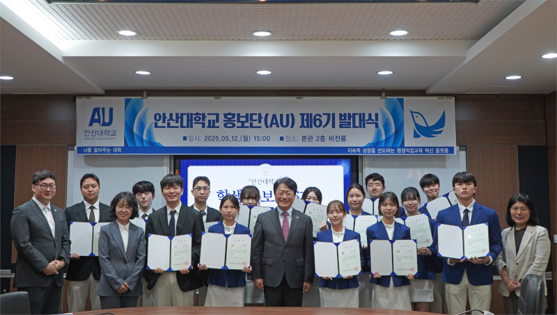

안산대학교 학생홍보단(AU) 6기 발대식 진행
작성일: 2025년 5월 22일
작성자: 관리자
안산대학교(총장 윤동열)는 지난 12일, 대학 본관 비전룸에서 학생홍보단(AU) 6기 발대식을 거행했다고 밝혔다. 안산대학교 학생홍보단(AU) 6기는 학생이 자발적 참여를 통해 대학의 다양한 프로그램 및 성과, 학생 활동 등을 효과적으로 홍보하고 학교생활의 여러 경험을 전파하여 학생들 간의 교류 활성화를 담당하는 역할을 하게 된다. 안산대학교 윤동열 총장은 “안산대학교의 새로운 변화와 함께할 인재들로, 자부심을 갖고 활동을 이어나가길 응원한다.”라고 격려했다.